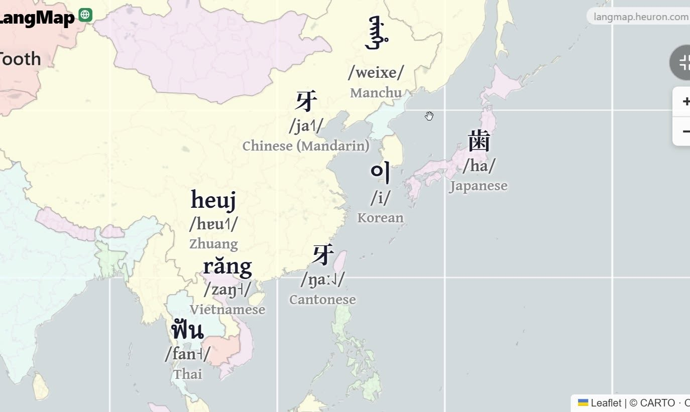

Sinosphere · · revised · Facebook post
The Sinosphere Cuts the Mouth in Two: 牙 and 齒
- Chinese has two old words for teeth, 牙 for the back teeth and tusks and 齒 for the front teeth.
- Most Chinese varieties now say 牙 for an ordinary tooth, but Japanese, Korean and Vietnamese kept their own native words.
- Indo-European named the tooth from what it does, "the one that is eating".

Contents
One mouth, two words
Classical Chinese had two words for teeth:
牙 = the back tooth, and the tusk
齒 = the front tooth
The mouth was cut in two, by position.
Today, most Chinese varieties say 牙 for an ordinary tooth:
Mandarin: 牙 (yá)
Cantonese: 牙 (ngaa4)
Shanghainese: 牙
And the neighbours?
Japanese: 歯 (ha)
Korean: 이 (i)
Vietnamese: răng
None of these three is borrowed from Chinese.
They kept their own words.
The script was shared, the mouth was not
Japanese, Korean and Vietnamese all took in thousands of Chinese words.
So the Chinese tooth words are there too. They just live in the learned layer.
Look at the word for dentistry:
Mandarin: 牙科 (yákē)
Japanese: 歯科 (shika)
Korean: 치과 (齒科) (chigwa)
Vietnamese: nha khoa (牙科)
Japanese and Korean built it on 齒, the front tooth.
Mandarin and Vietnamese built it on 牙.
But when a Japanese, Korean or Vietnamese speaker simply says "my tooth hurts", the word is native: ha, i, răng.
Vietnamese has a small twist. It has two readings of 牙: the standard Sino-Vietnamese nha, and an older layer, ngà. And ngà does not mean tooth.
It means ivory: the tusk, the original sense of 牙.
Japanese has a native word for that sense too: 牙 (kiba), "fang".
Not quite every Chinese variety
The original version of this post said that every Chinese variety uses 牙 for an ordinary tooth.
Readers corrected that, and the map was changed.
In Southern Min, the front tooth won.
Taiwanese: 喙齒 (tshuì-khí)
Teochew: 齿
Puxian: 齿
Taiwanese 喙齒 is literally "mouth-tooth". The Ministry of Education's Taiwanese dictionary gives 齒 khí as the tooth, and files 牙 gê under words like 虎牙 and 象牙.
So the old division between 牙 and 齒 is not gone. In most of China, 牙 took over the whole mouth. Along the southern coast, 齒 held on.
The one that is eating
Indo-European did something completely different.
Latin: dēns
Sanskrit: दन्तः (dantaḥ)
Lithuanian: dantis
English: tooth
German: Zahn
They all go back to Proto-Indo-European *h₃dónts.
And *h₃dónts is the present participle of *h₁ed-, "to eat", the same root as English eat and Latin edō.
A tooth is, grammatically, "the one that is eating".
Chinese named the tooth by where it sits in the mouth.
Indo-European named it by what it does.
Same organ, different handles
Back to the map.
牙 in Mandarin and Cantonese
齒 in Taiwanese
歯 ha in Japanese
이 i in Korean
răng in Vietnamese
One family splits the mouth by position. Another names the tooth by its job. And the neighbours of China, who shared its script, kept their own word for the thing they chew with every day.
The script was shared. The way of dividing up the mouth was not.